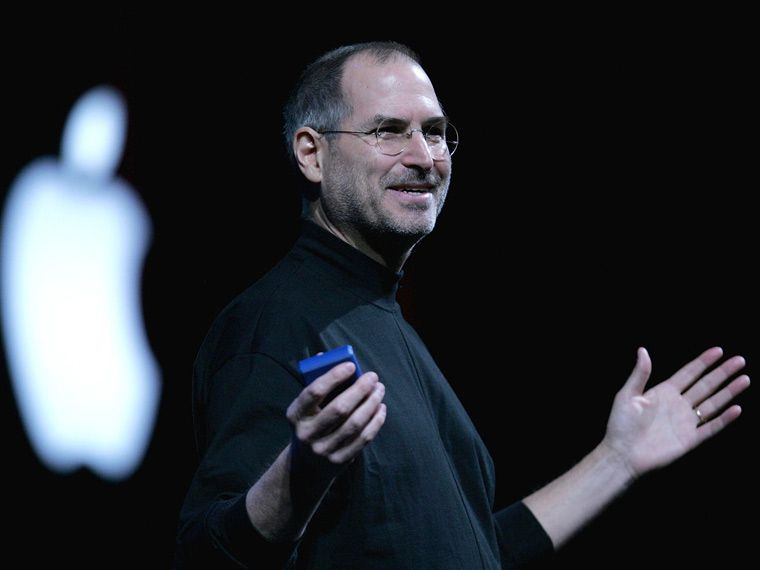
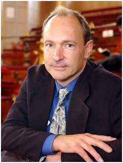

Bill Gates.
William Henry Gates III nació el 28 de octubre de 1955 en Seattle, Washington. Bill Gates
creció en una familia de clase media alta con su hermana mayor, Kristianne, y su hermana menor, Libby.
Su padre, William H. Gates, era un prometedor, aunque algo tímido estudiante de derecho; cuando conoció
a su futura esposa, Mary Maxwell. Su madre fue una estudiante atlética y extrovertida en la
Universidad de Washington, que participaba activamente en asuntos estudiantiles y liderazgo.
STEVE JOBS.
Steven Paul Jobs un inventor, diseñador y empresario estadounidense que fue cofundador, director
ejecutivo y presidente  de Apple
Computer Creó productos revolucionarios de Apple, incluyendo el iPod, iPhone y
iPad, ahora considerados como la evolución de la tecnología moderna.
Nacido en 1955 de dos estudiantes graduados de la Universidad de Wisconsin que lo
entregaron en adopción, Jobs fue inteligente pero sin rumbo, abandonó la universidad y
experimentó diferentes actividades antes de fundar Apple con Steve Wozniak en 1976.
Jobs abandonó la compañía en 1985 e inició el lanzamiento de Pixar Animation Studios
, luego regresó a Apple más de una década después. Jobs murió en 2011 luego de una
larga batalla contra el cáncer de páncreas.
Tim Berners-Lee, padre de la Web.
Sir Tim Berners-Lee inventó la World Wide Web en 1989.  Es el Director del World Wide Web Consortium (W3C), una organización de estándares web fundada
en 1994 que desarrolla tecnologías interoperables (especificaciones, directrices, software y herramientas)
para llevar a la web a su máximo potencial. Es un Director de la World Wide Web Foundation, que se lanzó en
2009 para coordinar los esfuerzos para promover el potencial de la Web en beneficio de la humanidad.
Sir Tim, quien se graduó de la Universidad de Oxford, inventó la web en el CERN, el Laboratorio Europeo de
Física de Partículas, en 1989. Escribió el primer cliente y servidor web en 1990. Sus especificaciones de
URI, HTTP y HTML se refinaron a medida que se extendía la tecnología web.
Es el Profesor Fundador de Ingeniería de 3Com en la Escuela de Ingeniería con una cita conjunta en el
Departamento de Ingeniería Eléctrica y Ciencias de la Computación en el Laboratorio de Ciencias de la
Computación e Inteligencia Artificial (CSAIL) en el Instituto de Tecnología de Massachusetts (MIT),
donde co -Dirige el Grupo de Información Descentralizado (DIG). También es profesor en el Departamento de
Ciencias de la Computación de la Universidad de Oxford, Reino Unido. Es presidente y fundó el Open Data
Institute en Londres.
En 2011 fue nombrado miembro de la Junta de Fideicomisarios de la Fundación Ford, una fundación
privada de orientación mundial con la misión de promover el bienestar humano. Es presidente del Open Data
Institute de Londres.